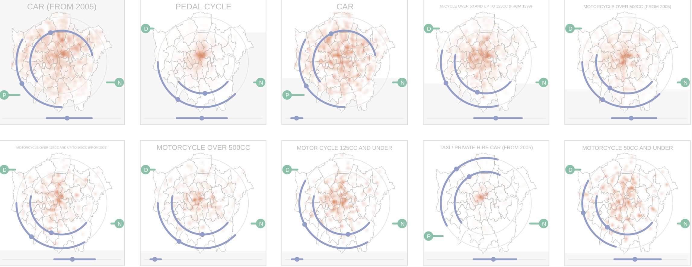

![]()
Important links
Abstract
Many datasets have multiple perspectives – for example space, time and description – and often analysts are required to study these multiple perspectives concurrently. This concurrent analysis becomes difficult when data are grouped and split into small multiples for comparison. A design challenge is thus to provide representations that enable multiple perspectives, split into small multiples, to be viewed simultaneously in ways that neither clutter nor overload. We present a design framework that allows us to do this. We claim that multi-perspective comparison across small multiples may be possible by superimposing perspectives on one another rather than juxtaposing those perspectives side-by-side. This approach defies conventional wisdom and likely results in visual and informational clutter. For this reason we propose designs at three levels of abstraction for each perspective. By flexibly varying the abstraction level, certain perspectives can be brought into, or out of, focus. We evaluate our framework through laboratory-style user tests. We find that superimposing, rather than juxtaposing, perspective views has little effect on performance of a low-level comparison task. We reflect on the user study and its design to further identify analysis situations for which our framework may be desirable. Although the user study findings were insufficiently discriminating, we believe our framework opens up a new design space for multi-perspective visual analysis.
Important figure

BibTeX citation
@article{beecham_faceted_2016,
title = {Faceted Views of Varying Emphasis (FaVVEs): a framework for visualising multi-perspective small multiples},
journal = {Computer Graphics Forum},
author = {Beecham, R. and Rooney, C. and Meier, S. and Dykes, J. and Slingsby, A. and Turkay, C. and Wong, W.},
year = {2016},
volume = {35},
number = {3},
pages = {241--249}
}